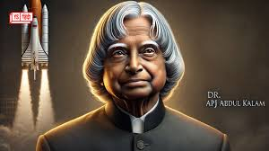
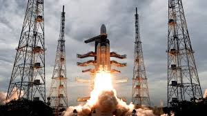
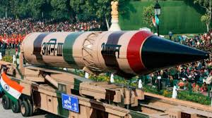
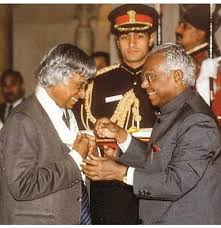

"Dream, Dream, Dream. Dreams transform into thoughts and thoughts result in action."
About Dr. A.P.J. Abdul Kalam
Avul Pakir Jainulabdeen Abdul Kalam, lovingly known as the "Missile Man of India," was one of the greatest scientists, educators, and leaders of our time. Born on October 15, 1931, in Rameswaram, Tamil Nadu, he rose to prominence through his relentless contributions to India's space and missile programs.
Dr. Kalam was a pivotal figure in the development of the Satellite Launch Vehicle (SLV-III) and ballistic missile systems like Agni and Prithvi. Beyond his scientific achievements, he served as the 11th President of India from 2002 to 2007, inspiring millions with his humility and vision for a developed India.
He received numerous awards, including the Bharat Ratna, Padma Bhushan, and Padma Vibhushan. Dr. Kalam's legacy lives on through his writings, speeches, and unwavering dedication to empowering youth.
Notable Achievements

Development of SLV-III

Design of Agni Missile

Recipient of Bharat Ratna